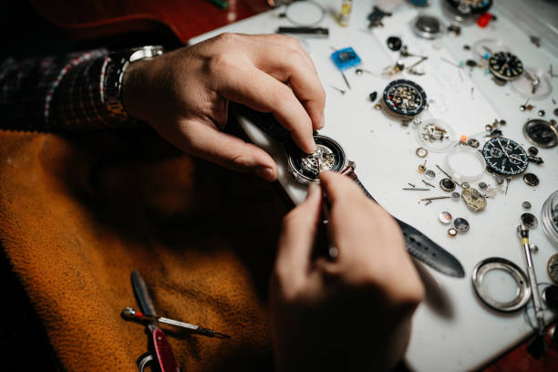

Battery Replacement 電池交換
Genuine or high-quality compatible batteries installed with careful case resealing and water-resistance testing. We preserve original gaskets whenever possible.
Expert care for vintage quartz timepieces in the heart of Chigasaki 茅ヶ崎の中心で、ヴィンテージクォーツ時計の専門ケア
Book a Repair Consultation
Nestled inside Yamada Denki LABI LIFE SELECT Chigasaki, Kawabata's has been a trusted name in vintage quartz watch repair for over two decades. Mr. Kawabata brings a meticulous eye and steady hand to every timepiece that crosses his workbench.
Specializing in iconic Japanese brands — Seiko, Citizen, Casio, and Orient — we understand that these watches are more than instruments. They are heirlooms, memories, and stories waiting to be told again.
From the delicate circuitry of early 1970s quartz movements to the intricate gearing of hybrid models, no mechanism is too obscure, no repair too delicate.
"Every tick restored is a memory reclaimed."
— 蘇る音は、蘇る思い出
Comprehensive care for your treasured timepieces, delivered with precision and respect.
Genuine or high-quality compatible batteries installed with careful case resealing and water-resistance testing. We preserve original gaskets whenever possible.
Ultrasonic cleaning of quartz modules, gear trains, and circuit boards. Corrosion treatment and contact restoration for reliable long-term performance.
Stem replacement, crown threading repair, and pusher restoration for chronographs and digital-analog hybrids. Sourcing rare OEM parts when available.
Extensive network of domestic and international suppliers to locate discontinued crystals, circuit boards, coils, and case components for rare models.
Replacement of case-back, crown, and crystal gaskets to restore original water resistance. Pressure testing included for peace of mind.
Wide selection of leather, rubber, nylon, and metal bands to match your vintage piece. Professional fitting and lug-width matching included.
Precision resizing of stainless steel, titanium, and gold-filled bracelets. Pin, screw, and folded-link adjustments handled with care.
Detailed inspection and transparent quotation for full movement overhaul, case refinishing, and dial restoration. No hidden costs, no pressure.
Conveniently located inside Yamada Denki LABI LIFE SELECT Chigasaki, just moments from JR Chigasaki Station.
| Monday, Wednesday – Sunday （月、水、木、金、土、日） | 10:00 – 19:00 |
|---|---|
| Tuesday （火） | Closed / 定休日 |
* Hours may vary during New Year and Obon. Please call ahead. ※ 年末年始・お盆期間は営業時間が異なる場合があります。事前にご確認ください。
By Train: 5-minute walk from JR Chigasaki Station (East Exit)
JR茅ヶ崎駅 東口より徒歩5分
By Car: Parking available at Yamada Denki. Validate your ticket at the service counter.
山田電機駐車場をご利用いただけます（サービスカウンターで駐車券の確認を）
Questions about your watch? Reach out by phone, email, or visit us directly.
+81-0467-30-9011
Available during business hours
（営業時間内）
@lls_chigasaki
Official store updates and announcements
（店舗の最新情報やお知らせ）
No appointment necessary for battery replacement or quick diagnostics. 電池交換や簡易診断は予約不要です。